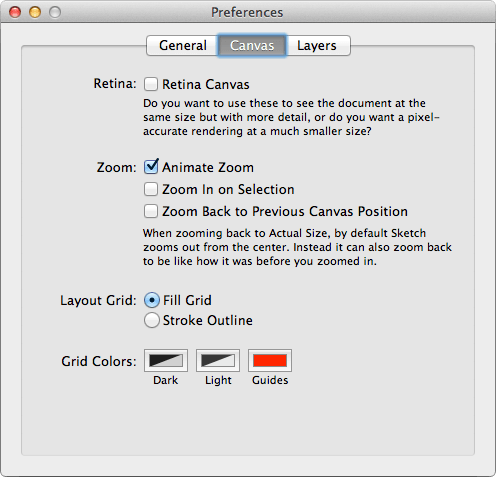
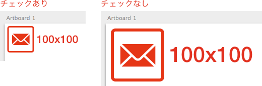
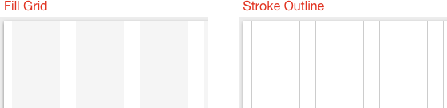

Sketch.app Advent Calender 2013 4日目の記事です。
今回はSketch.appの環境設定シリーズ第2弾の「Canvas」についてお届けします。
Sketchの基本。というSketch（Sketch 3）の基本操作にフォーカスした電子書籍をリリースしました。詳しくはこちらの「Sketchの基本。」のページをご覧ください。
この記事はSketch 2を元にした記事です。最新版の動作とは異なる可能性が高いため、参考程度にご覧ください。
Canvasタブについて

「Canvas」タブでは、キャンバス（ドキュメント）の描画に関わる設定ができます。今回も前回と同じく、Sketch.app 2.4.1をベースに書いています。
Retina

チェックすると、等倍時の表示サイズが@1xの1/2になります（表示だけでサイズは同じです）。iOS向けの制作物なら、この設定をオンにしておく方が幸せかもしれません。（Retina Displayのマシンがないので検証できませんが、それ向けなんでしょうか）
Zoom
Animate Zoom
チェックしておくと、ズーム/ズームアウトする際にアニメーションします。
Zoom In on Selection
チェックしておくと、選択範囲がセンターになるように表示がズーム/ズームアウトします。
Zoom Back to Previous Canvas Position
チェックしておくと、等倍表示した際に、前回等倍表示していた状態と同じになります。例えば、等倍表示から2回ズームし、ハンドツールで画面をスクロール後に等倍表示すると、ズームと移動を行う前の等倍表示と同じ表示になります。
Layout Grid
「Grid Setting…」から「Layout Grid」を作成した場合の表示方法を設定します。「Fill Grid」は塗りで、「Stroke Outline」は線のみのグリッドになります。

Grid Colors
グリッドやガイドの色を設定します。
「Dark」がSquare Gridの区切りと、Layout Gridの「Stroke Outline」での色、「Light」がその他のグリッドの色、「Guides」がガイドラインの色になります。
ちょっと短めになりましたが、いかがでしたでしょうか。
次回は環境設定シリーズの最終回「Layers」についてお届けする予定です。